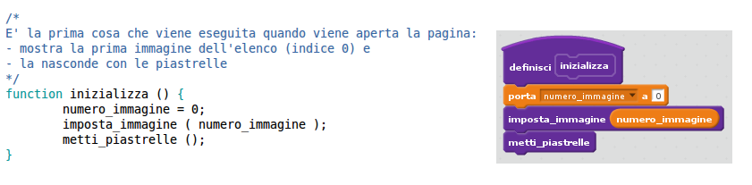
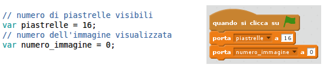
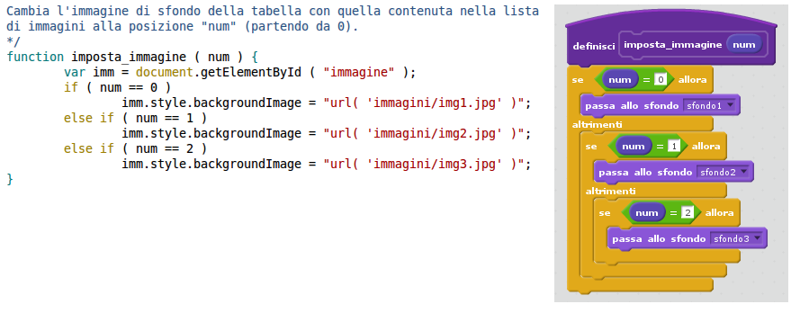
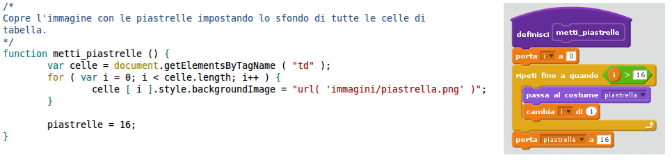
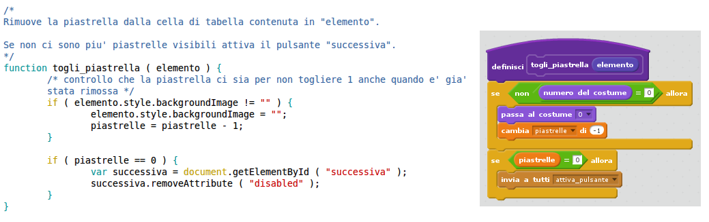
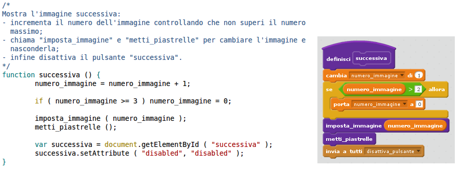

Di che tipo di gioco si tratta?
C'è un'immagine nascosta da una serie di "piastrelle": ogni piastrella scompare se ci si clicca sopra rivelando parte dell'immagine. Quando l'immagine è completamente scoperta si attiva il pulsante "Successiva" per passare all'immagine successiva.
Javascript è l'unico linguaggio di programmazione che i browser capiscono e viene utilizzato per far fare qualcosa alle pagine web.
Quindi le componenti che si usano per creare un sito sono:
In questo tutorial le useremo tutte e tre:
Creiamo la pagina con l'immagine e la griglia delle piastrelle
La pagina è composta da tre righe:
Per comporla utilizziamo gli strumenti che ci mette a disposizione Bootstrap, ma non è obbligatorio. Li utilizziamo perché potrebbero tornarci comodi se vorremo abbellire il gioco in seguito.
Qui trovi la pagina vuota HTML standard con l'intestazione per Bootstrap e il container pronto all'uso.
<html>
<head>
<meta charset="utf-8">
<title>Scopri l'immagine</title>
<meta name="viewport" content="width=device-width, initial-scale=1">
<link rel="stylesheet" type="text/css" href="./bootstrap/css/bootstrap.min.css">
</head>
<body>
<div class="container">
</div>
<!-- fine container -->
<script src="./bootstrap/js/jquery-1.12.1.min.js"></script>
<script src="./bootstrap/js/bootstrap.min.js"></script>
</body>
</html>
Nel container devi inserire una prima riga con il titolo del gioco. Ti ricordi come si fa ad aggiungere una riga con Bootstrap?
Una riga è un <div> con class="row", così:
<div class="row">
</div>
All'interno devi mettere il <div> che definisce le colonne:
per questo gioco mettiamo sempre un'unica colonna larga tutto lo schermo, cioè
che occupa tutte le 12 colonne di Bootstrap:
<div class="col-md-12">
</div>
Infine, dentro la nostra colonna puoi scrivere il titolo del gioco.
Come seconda riga dobbiamo inserire la griglia che conterrà l'immagine e le 16
piastrelle che la nascondono. Per fare una griglia in HTML si usa una tabella:
l'elemento <table> serve per creare tabelle rettangolari che
assomigliano ai fogli di calcolo in Excel (oppure OpenOffice, ecc.).
Una riga della tabella si inserisce con l'elemento
<tr>.
Una cella della tabella si inserisce con l'elemento <td>.
Esempio di tabella con tre righe e due celle per riga:
<table>
<tr>
<td>Riga 1 Cella 1</td>
<td>Riga 1 Cella 2</td>
</tr>
<tr>
<td>Riga 2 Cella 1</td>
<td>Riga 2 Cella 2</td>
</tr>
<tr>
<td></td>
<td></td>
</tr>
</table>
Le celle della terza riga, per esempio, sono vuote.
Abbiamo scritto gli elementi <td> uno sotto l'altro per
comodità, ma il browser li visualizzerà sulla stessa riga.
Tu devi inserire una tabella di 16 righe e 16 colonne con tutte le celle vuote, quindi rimboccati le maniche e procedi! In realtà dopo aver scritto la prima riga puoi usare il copia & incolla per le successive.
Ricordati di creare una riga e la singola colonna per Bootstrap come abbiamo fatto prima per il titolo perché altrimenti la tabella non sarà impaginata correttamente.
Fatto?
Cosa vedi nel browser?
Niente?
Perfetto! La tabella c'è ma non ha bordi ed è completamente vuota, quindi è invisibile.
In realtà per completarla ci mancano due cose: il CSS per impostare la dimensione e il Javascript per riempirla, ma vedremo tutto nelle prossime sezioni.
Abbiamo quasi finito: la terza riga contiene solo il pulsante "Successiva" che servirà per spostarsi all'immagine successiva.
Quindi crea la solita coppia riga + colonna di Bootstrap e all'interno aggiungi il pulsante:
<button id="successiva" class="btn btn-primary" disabled>Successiva</button>
Nota bene: il pulsante ha un identificativo (una specie di nome) contenuto nell'attributo "id" e compare già disabilitato (ha l'attributo "disabled") in modo che non sia cliccabile.
Aggiungiamo un po' di stile
Crea un file "scopri_immagine.css" e nel file "scopri_immagine.html" crea un link per collegarlo.
Suggerimento se non ti ricordi la sintassi: copia il
<link> che compare nella <head> e che
punta verso il CSS di Bootstrap e poi cambia il nome file dentro l'attributo
href.
Le uniche proprietà che dobbiamo impostare sono quelle della tabella, quindi
nel file CSS che hai appena creato aggiungi un selettore
table e inserisci le seguenti linee:
width: 600px;
height: 337px;
border-spacing: 2px;
border-collapse: separate;
Le proprietà "width" e "height" impostano la larghezza e l'altezza della tabella, mentre le proprietà "border" servono per spaziare un po' le celle tra di loro in modo che si veda la separazione tra le piastrelle.
Animiamo il nostro gioco
Per chi è abituato a Scratch, Javascript è un "vero" linguaggio di programmazione, quindi la prima cosa che si nota è che è necessario scrivere tutte le istruzioni a mano: non esistono blocchi da spostare con le istruzioni già pronte e qualche casella da riempire.
Tuttavia ci sono molte somiglianze e nel seguito verranno evidenziate mettendo a confronto il codice Javascript con l'analogo Scratch (dove possibile).
Crea un file "scopri_immagine.js" in cui andrai a scrivere il codice Javascript
e collegalo nel file "scopri_immagine.html". Per collegarlo devi creare un
elemento <script> in fondo al <body>, dopo
gli elementi <script> di Bootstrap:
<script src="./scopri_immagine.js"></script>
In questo modo dici al browser di caricare il programma Javascript che hai scritto in quel file.
La prima cosa che il nostro programma deve fare è caricare la prima immagine e visualizzare le 16 piastrelle sopra l'immagine per nasconderla.
Nel file "scopri_immagine.js" scrivi una funzione fatta così:
function inizializza () {
numero_immagine = 0;
imposta_immagine ( numero_immagine );
metti_piastrelle ();
}
Una "funzione" è un blocco di istruzioni che possono essere chiamate tutte assieme. La nostra funzione:
In Scratch avrebbe questo aspetto:

La parte in blu è un commento: il browser non lo vede e serve solo per spiegare cosa fa la funzione.
Differenze:
A questo punto, però, ci mancano molti pezzi per far funzionare la nostra funzione (scusate il gioco di parole).
Prova a indovinare cosa prima di passare alla slide successiva.
Vediamo se hai indovinato:
Ricordati che a un computer dobbiamo dire tutto.
Definiamo prima di tutto le variabili che ci serviranno nel programma. Scrivile in cima al file, sopra la funzione "inizializza".
// numero di piastrelle visibili
var piastrelle = 16;
// numero dell'immagine visualizzata
var numero_immagine = 0;
Le righe che iniziano con "//" sono dei commenti, puoi evitare di scriverle se vuoi.
In Scratch avrebbe questo aspetto:

In Javascript quando si definisce una variabile per la prima volta occorre usare la parola chiave "var".
Questa è la funzione che cambia l'immagine di sfondo della tabella
La funzione da aggiungere al nostro file è la seguente:
function imposta_immagine ( num ) {
var imm = document.getElementById ( "immagine" );
if ( num == 0 )
imm.style.backgroundImage = "url( 'immagini/img1.jpg' )";
else if ( num == 1 )
imm.style.backgroundImage = "url( 'immagini/img2.jpg' )";
else if ( num == 2 )
imm.style.backgroundImage = "url( 'immagini/img3.jpg' )";
}
Diamo subito un'occhiata a come apparirebbe in Scratch:

Come vedi si assomigliano moltissimo, con le dovute differenze:
L'unica riga completamente nuova è la prima:
var imm = document.getElementById ( "immagine" );
Se leggi bene, il nome della funzione chiamata ti dà qualche indizio:
| document | get | Element | By | Id | "immagine" |
| dal documento | ricava | l'elemento | con | id | "immagine" |
Quindi stiamo chiedendo al browser di prendere l'elemento nel nostro HTML che ha l'attributo "id" uguale a "immagine" e di metterlo nella nuova (c'è "var" davanti) variabile "imm" perché ci servirà dopo.
Ma noi non abbiamo un elemento con id "immagine"! Apriamo il file HTML e
aggiungiamo l'attributo id="immagine" all'elemento <table>.
Il risultato è questo:
<table id="immagine">
In questo modo l'istruzione di prima trova la tabella e la "mette" nella variabile "imm" così noi possiamo modificarla cambiandone lo sfondo.
Avendo il riferimento alla tabella, nelle istruzioni "if" possiamo cambiarne lo sfondo con questa istruzione:
imm.style.backgroundImage = "url( 'immagini/img1.jpg' )"
| imm | style | background | Image | url |
| elemento | stile | sfondo | immagine | percorso |
Finalmente possiamo provare quello che abbiamo scritto fino ad ora.
Prima di tutto nella funzione "inizializza" devi commentare temporaneamente la chiamata alla funzione "metti_piastrelle" perché non esiste ancora e il browser ci darebbe un errore. Per farla diventare un commento aggiunti i caratteri "//" a inizio riga.
Poi dobbiamo dire al browser di chiamare la funzione "inizializza" che è il
punto di partenza di tutto, un po' come la bandiera verde in Scratch. La
chiamiamo dal file HTML. Apri questo file e modifica l'elemento
<body> aggiungendo l'attributo "onload" in modo che diventi
così:
<body onload="inizializza()">
Se aggiorni il browser (F5) e tutto è andato al suo posto dovrebbe comparire la prima immagine.
Che sudata!
Questa funzione mostra le piastrelle nascondendo l'immagine di sfondo.
Per mostrare le piastrelle utilizziamo lo stesso metodo usato per l'immagine grossa: ogni piastrella è l'immagine di sfondo di una cella della tabella.
Quindi, come già fatto per l'immagine grossa, chiediamo al browser di passarci tutte le celle di tabella che trova nel documento e per ciascuna di queste impostiamo lo sfondo con l'immagine della piastrella:
function metti_piastrelle () {
var celle = document.getElementsByTagName ( "td" );
for ( var i = 0; i < celle.length; i++ ) {
celle [ i ].style.backgroundImage = "url( 'immagini/piastrella.png' )";
}
piastrelle = 16;
}
L'istruzione usata è leggermente diversa dalla precedente:
var celle = document.getElementsByTagName ( "td" );
Se leggi bene, il nome della funzione chiamata ti dà qualche indizio:
| document | get | Elements | By | Tag | Name | "td" |
| dal documento | ricava | gli elementi | con | tag | nome | "td" |
L'istruzione "for" serve per eseguire un ciclo, un po' come l'istruzione "ripeti" in Scratch. Anche se non è proprio uguale proviamo a renderla così:
A questo punto, se togli il commento davanti a "metti_piastrelle" nella funzione "inizializza" e aggiorni la pagina nel browser dovresti vedere comparire anche le piastrelle.
Questa funzione nasconde una piastrella quando si clicca con il mouse su di essa mostrando parte dell'immagine sottostante.
Questa funzione è un po' diversa dalle precedenti perché non deve cercare la cella di tabella da modificare, ma quando il browser la chiama le passa già la cella su cui hai cliccato.
function togli_piastrella ( elemento ) {
/* controllo che la piastrella ci sia per non togliere 1 anche quando e' gia'
stata rimossa */
if ( elemento.style.backgroundImage != "" ) {
elemento.style.backgroundImage = "";
piastrelle = piastrelle - 1;
}
if ( piastrelle == 0 ) {
var successiva = document.getElementById ( "successiva" );
successiva.removeAttribute ( "disabled" );
}
}
Quindi quando clicchi su una cella di tabella il browser chiama la funzione "togli_piastrella" e le passa nel parametro "elemento" la cella su cui hai cliccato. La funzione poi fa due cose semplici:
style.backgroundImage) e se ce l'ha la toglie. Così la piastrella
scompare e dobbiamo ricordarci di sottrarre 1 dal numero di piastrelle
visualizzate;
Questa potrebbe essere la rappresentazione (approssimativa) in Scratch:
Guarda come facciamo ad attivare il pulsante "Successiva": dovresti riconoscere un'istruzione che hai già visto.
Difatti utilizziamo l'istruzione getElementById per cercare un
elemento con attributo "id" uguale a "successiva" come abbiamo già fatto in
precedenza per cercare la tabella.
Poi il pulsante viene attivato rimuovento il suo attributo "disabled". Leggi bene l'istruzione:
| successiva | remove | Attribute | "disabled" |
| da successiva | rimuovi | l'attributo | "disabled" |
Ci manca un pezzo, però: come fa il browser a sapere che deve chiamare la funzione "togli_piastrella" quando clicchi su una cella di tabella?
Un modo è quello di aggiungere a ogni cella l'attributo "onclick" (che vuol dire "quando si clicca") con all'interno la chiamata alla nostra funzione.
Nel file HTML una cella di tabella diventerà così:
<td onclick="togli_piastrella( this )"></td>
Questa modifica deve essere eseguita su tutti gli elementi
<td>.
Se hai finito, aggiorna il browser con F5 e prova a cliccare sulle piastrelle per vedere se scompaiono.
Falle scomparire tutte e controlla se il pulsante "Successiva" si attiva.
Come dice il nome questa funzione contiene le istruzioni che verranno eseguite quando si clicca sul pulsante "Successiva".
Prova a immaginare cosa dovrà fare questa funzione.
Ricordati che il numero dell'immagine che stiamo visualizzando è memorizzato
nella variabile numero_immagine e che abbiamo al massimo 3
immagini.
Guarda se ti sei ricordato tutto:
function successiva () {
numero_immagine = numero_immagine + 1;
if ( numero_immagine >= 3 ) numero_immagine = 0;
imposta_immagine ( numero_immagine );
metti_piastrelle ();
var successiva = document.getElementById ( "successiva" );
successiva.setAttribute ( "disabled", "disabled" );
}
Ecco la solita rappresentazione in Scratch:
Dimenticato niente?
Come fa il browser a sapere che deve chiamare la funzione "successiva" quando clicchi sul pulsante? Ora dovresti conoscere il trucco.
Facciamo come abbiamo fatto per le celle di tabella: aggiungiamo al pulsante l'attributo "onclick" con all'interno la chiamata alla nostra funzione:
<button id="successiva" class="btn btn-primary" onclick="successiva()" disabled>Successiva</button>
Il tuo gioco è finito.
Cosa puoi fare ora?
Fai attenzione che devono essere tutte della stessa dimensione e che nella funzione "successiva" c'è il controllo sul numero massimo di immagini che deve essere modificato.
Esercitati a usare i CSS per rendere più bello il tuo gioco.